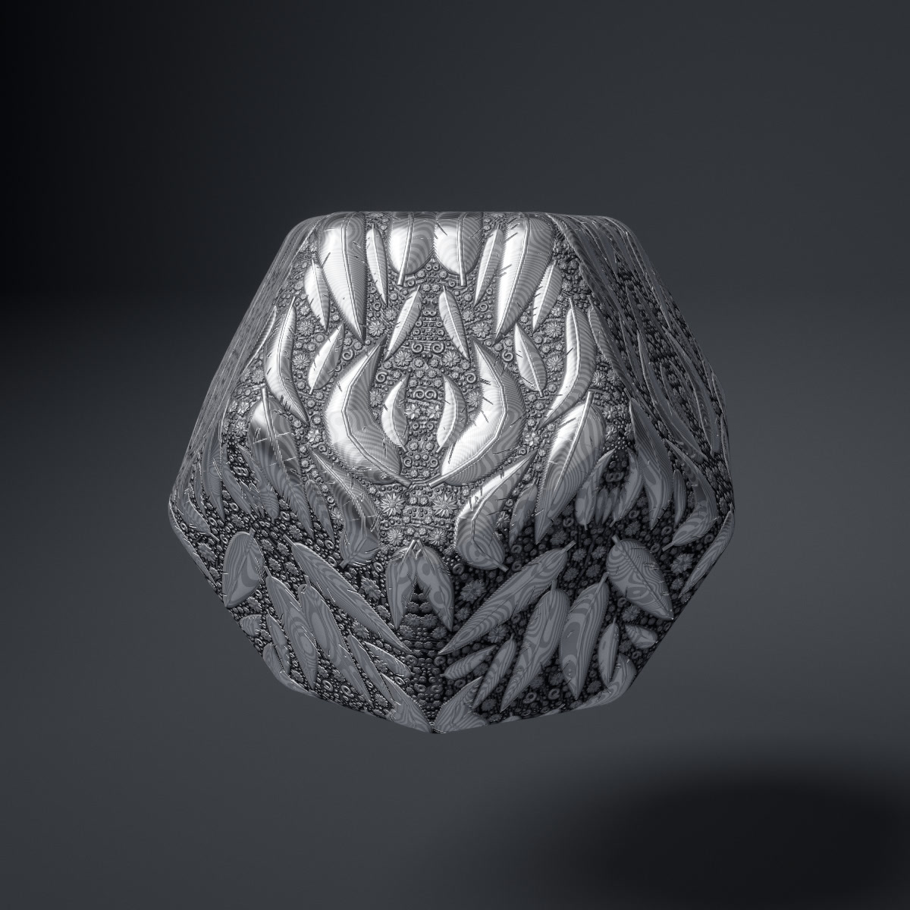

How Caustic bites
A polished metal blank gets an ornament scribed on it, hammered up, eaten into by acid, patinated and burnished, all in about half a minute. Here is how a pattern grows on any surface, how tens of thousands of motifs are found per pixel, and how the acid bites and fumes.
See it live
A blank, a pattern and a bath of acid
The references were repoussé and chased silver, crowded with flowers and acanthus over a matted ground, and copper panels of scrolling leaves with verdigris in every hollow. Day 10's prompt was Caustic, so the ornament isn't modelled. It is made the way a workshop would make it: drawn onto a blank, raised by the hammer, and left standing when acid eats the ground away around it.
There are 14 blanks: a sphere, torus, rounded box, superellipsoid cushion, trefoil and cinquefoil knots, a twisted triangular ring, a Möbius band, soft blobs, Suzanne, a gyroid sheet cut to a ball, a rounded dodecahedron and icosahedron, and a lentil. There are 16 patterns and 21 metals, from copper with verdigris to champlevé enamel. Shape, Pattern, Metal and Symmetry each have their own selector, and every combination works.
The work is split three ways. A worker grows the ornament as a list of primitives. The shared pipeline renders the blank as an ordinary mesh, and its fragment shader finds the primitives near each pixel and builds the relief there. A small fluid solver on the GPU makes the fumes.
Half a minute in the workshop
Every piece runs the same clock. Each stage is a window of it, and the shader gets each window as a fraction from 0 to 1: ornDraw, ornHammer, ornEtch, ornPatina, ornBurnish, and for enamel ornFill, ornFire and ornGrind. Nothing is baked, so the whole history is in the shader and E replays it from zero. Speed scales the clock. The clock stops while pieces change over, and auto change waits for the run to end, then for Change every seconds more.
The two runs, in seconds at speed 1
Inside the etch: the acid spreads over the piece in its first fifth (to 13.6 s). The bite runs from 4% to 84% of it (12.3 to 18.7 s), and the rinse thins the acid away from 66% to 97% (17.3 to 19.8 s). Enamel lays its patina, the kiln's firescale, during the fire.
Anything with a closest point
The generators never see a mesh. All they need from a blank is project(x, y, z), the closest point on the surface and its normal, plus its area, its bounds and the symmetries it has. Walking on a surface is then always the same thing: step along the tangent and project back.
The sphere, torus and rounded box have exact projections. The cushion, twisted ring and blobs are distance fields: a point lands on the surface by Newton steps along the gradient, then slides until its offset is normal to it. The knots are tubes, projected from the closest point on their curve, found from a grid of candidate lists and then Newton steps on the curve's parameter. The polyhedra project from the nearest face, edge or corner of the inner solid. The gyroid falls back to the nearest of a cloud of surface points where Newton steps miss along its tunnels.
The meshes are built in the worker, the first time a shape is asked for. The sphere and box are six grids on a cube projected onto them, equal-angle on the sphere. The field blanks use surface nets, relaxed so that each vertex moves halfway to its neighbours' mean and is projected back. The knots are tubes with rotation-minimizing frames, and the twisted ring is a (u, v) grid whose last ring joins its first a third of the way round. The mesh only has to be fine enough for the silhouette and the hammer dents. A finer one would only add small triangles that the relief shader pays for in partly covered pixel blocks, so the detail stops at 110 (160 for capture).
Stems that curl into the space left
The floral rinceau sets the method that most patterns follow. The main stems are flow lines: contours of a noise on the surface plus a slope, so they swirl but never cross (Flow sets how much they wander). They grow all at once, a step per round from scattered seeds in both directions, and stop when they come within a band of another line. The lines are smoothed and turned into stems, thickest in the middle, with a node every 0.05 to 0.08 of the blank's radius at Scale 1.3.
Scrolls peel off at the nodes. Each one walks the surface with its radius of curvature shrinking linearly along its length, as in a logarithmic spiral. Before every step it checks an occupancy grid of discs, one laid down at every step of everything so far. If the next step is blocked, the scroll doesn't stop; it tries curling 1.5, 2.3 and 3.5 times tighter, so it wraps into whatever space is left, after Robert Hodgin's Growth. A scroll blocked early would only be a stub, so it is taken back: its discs and primitives are rolled away. Each disc is checked at its radius plus a gap, and that gap becomes the etched ground.
Last comes a sweep over a fine lattice. Every spot still free gets the largest motif that fits, so no ground is left wider than the gap. Every element keeps a growth time, which orders the drawing.
A patch of rinceau, grown
The day's own constants at Scale 1.3: band, step, stem width and gap. The noise is four times finer so a patch holds a few swirls rather than part of one. Cells shows the packing grid of the next section, 0.016 across, shaded by how many primitives each cell lists; hover a cell to see its primitives' footprints. In the day the flowers, leaves, fronds and buds are primitives of their own; here the fillers are beads and rosettes.
ta, tb), so a stem is scribed from base to tip, and a hammer time th: the first blow that lands on it.Math.random, so a Variation and its settings give the same piece on any machine.Sixteen ways to fill a surface
Each pattern is a function from a blank and its options to a list of primitives, sharing the walker, the occupancy grid and the symmetry images. The Pattern selector shows only the sliders a pattern reads, named for what they do in it: Flow is Breaks in knotwork, Turns in the meander and Wander in the scales.
Grown up to the mirror
A symmetry is a few generators, 3 × 3 reflection matrices, closed under multiplication into a group. Mirror is one plane, 2 planes two and 3 planes adds the equator. An n-fold kaleidoscope is the plane x = 0 plus one at π / n from it, which together make a group of 2n. On the rounded box, 3-fold turns about the cube's diagonal and 6-fold is its full symmetry. Shapes that have other groups list them: the knots have rotations only, the polyhedra add 5-fold and pyritohedral, and the Möbius band and the blobs have none.
The generator grows only once. Every disc it reserves in the occupancy grid is reserved again at each image, under an owner of its own, and a disc that would overlap its own image is refused. So motifs grow up to the planes without crossing them, and nothing has to be cut at a seam. At the end every primitive is copied to each image; one that lies on a mirror is its own image and is kept once. A mirrored copy has a negative determinant, so its leaves, fronds and twists swap hands and curl the other way.
A kaleidoscope, seen down its axis
Drag to draw: each stroke is copied to every image. Grow places curls with the generator's two tests: a curl must clear every disc already reserved, including the images, and must not overlap its own image. The shaded wedge is the fundamental domain as inDomain finds it, the points closer to a generic point than to any of its images.
Thirty-six thousand motifs, a few per pixel
A rinceau on the sphere is about 36,000 primitives. The shader can't loop over them all, so the worker packs them with a lookup. Each primitive is five RGBA float texels in a texture 4096 wide. A uniform grid of cells 0.016 across covers the shape's bounds: 130 cells a side for the sphere, about 2.2 million cells. Each cell holds an offset and a count into a list of primitive ids. A primitive goes into every cell its bounding sphere reaches, plus a margin of 0.012. Straps and feather segments are tested against their segment, not their sphere, and big footprints skip cells the blank's distance field says no pixel can be in.
The packing makes two passes over each footprint's cells, counting and then filling, straight into typed arrays that are transferred to the page without a copy. A cell lists at most 96 primitives. The worker also sends the hammer blows, a 64-bin histogram of how much is being drawn at each moment (for the scribe's sound), the list of primitive types the piece uses, and for a new shape its mesh and, on the high tier, a 32³ signed distance field for the fumes.
t0 = (a.xyz, type) t1 = (b.xyz, size) t2 = (shape parameters)
t3 = (ta, tb, th, height) // drawing interval, hammer time
t4 = (centre.xyz, ceil(radius · 4096) + height) // bounding sphere, for far pixels
// cell (ornCells, RG32UI) = (offset, count) into ornList (R32UI) of primitive ids
A height per pixel, a normal by differences
The blank is drawn as a plain mesh. All the ornament is in its fragment shader: a surface() hook of the pipeline's material, so it gets the pipeline's shadows, AO and lighting like any other surface. Each pixel finds its cell from its object-space position and loops over the cell's list. A primitive not yet drawn is skipped. One whose bounding sphere is more than 0.025 away only adds its distance and the occlusion its height casts. The rest are evaluated by ornEval, which switches on the type: a half-round stem along an arc, a lobed acanthus leaf bent along an arc, a rosette of petal rings, a bead, a ribbon with its crossing, a scale cut back by its neighbours' rims, and 22 types in all.
Each returns a signed distance to its outline, a height, how far its neighbours rise over the ground (for occlusion) and a cavity term (for the patina). Within a primitive the higher part wins. Across primitives the heights join with a smooth maximum, softening by 12% of the taller one, so the pieces of a chain meet in a fillet rather than a crease. The distance takes the plain minimum, and that union's outline is where the scribed line runs.
The shader evaluates that at the pixel and at two points a fraction of a pixel along the tangents, and takes the normal from the three heights. The detail is as fine as the screen allows, close up as far away, and needs no UVs. Phones take one sample and get the slope from screen derivatives of the height instead (Mikkelsen's surface gradient). Where the relief is finer than a pixel, the normal's own derivatives widen the roughness rather than letting it sparkle; matting, pits, guilloché grooves and laminate rings fade to a matching sheen.
k = 0.12 · max(ha, hb) m = clamp(½ + ½ (hb − ha) / k, 0, 1) h = mix(ha, hb, m) + k m (1 − m)
// the normal, from the height at p and one step ε along each tangent
n' = normalize(n − T (hT − h0) / ε − B (hB − h0) / ε) ε = max(0.6 · |fwidth(p)|, 0.00025)
Written for one compiler
The loops are shaped for Direct3D's HLSL compiler, which ANGLE uses on Windows. Inlined three times, once per sample, ornEval took minutes to compile there, so it is called once from a loop the compiler can't unroll. The cell's count comes from data, while a constant bound would be unrolled 96 times. And a program only holds the types a piece uses: each #ifdef ORN_T<type> block is compiled in only when the worker lists that type.
The hammer
The blows are the one thing done on the mesh. Between 24 and 96 points (by area: 63 on the sphere) are spread over the blank and ordered as a greedy nearest-neighbour tour, so the hammer works its way across. Each primitive rises at the first blow within reach. In the vertex shader each blow dents the blank with a falloff of (1 − r²/R²)², overshooting by half its depth and springing back, and the normal is bent by the same gradient. In the fragment shader a struck motif rises over 5% of the stage, overshooting about 10% before it settles.
Bitten from the walls out
The ground is everything outside the motifs, and its depth is a function of the distance to them. The acid starts at the resist walls and spreads out across the ground as the bite goes on, faster where a noise says the acid is agitated. Where it has bitten, the profile is an isotropic etch: a steep, rounded wall with a cove at its foot, and the ground deeper in open spaces than in narrow ones. The scribed line is a fine groove along the outline, a pixel wide. Once etched it becomes a crisper chased groove at the wall's foot. Punch matting, two staggered layers of round dents, and fine pits roughen the bitten ground.
Relief and Grind act on the motifs differently. Relief scales every height. Grind lowers a flat cutting level from above the tallest motifs to just over the ground, and every crown above it is shaved off flat: fresh, polished metal with the patina cut away. Enamel uses the same cut. The powder is packed into the ground, fused into glass that sags a little over wide cells, and then a stone comes down from above until metal and glass are flush.
A section through three motifs
The day's height function in one dimension, with its constants: walls 0.0035 wide, etch depth 0.006 times Bite, on a blank of radius 1. The section is 0.064 across, drawn to scale. The stems carry the chased line down their length that makes a stem read as two strands. Enamel switches to champlevé turquoise and its longer run, with coral hugging the metal.
While the acid is on, the metal is seen dark through a yellow-green film, and the film reflects with a normal of its own. That normal comes from a second height that is level over the ground, rises in a meniscus up every wall, ripples slowly, and is domed by gas bubbles. The bubbles nucleate on the bitten ground in cells of a hashed lattice, cluster along the walls, are densest where the bite is fastest, grow and pop. The acid's coverage is a noise in the piece's own frame: it spreads from a few places with an irregular front, and the rinse thins it into patches that hang on longest in the crevices.
The metal stains as it bites. Copper, gold and bronze go brown, rose by the walls, then dark red-black. Silver and steel go a frosty grey.
Twenty-one metals
The patina comes in two layers. An oxide darkens the whole piece, and a crust gathers where a workshop's would: tight along the walls, in the chased groove, in the motifs' folds (from the cavity term), and in blotches over the ground. The burnish then takes both off the crowns, highest first. Its reach is a value per metal, so copper is rubbed back far and excavated bronze only at the tips.
A metal is a table of colours and amounts: metal, oxide, crust, how dark and rough the ground goes, how far the burnish reaches, and the studio and backdrop that suit it. A few finishes need code of their own, and only those finishes compile it.
ORN_FILL)Niello, three champlevé enamels and mother-of-pearl: powder packed from scattered points, fired with a red glow that scales the bare metal, ground flush, polished. Niello's engraved lines fill black once the stone cuts the faces.ORN_CLEAR, ORN_GUILLOCHE)Translucent glass over an engine-turned ground. The grooves under it are lit through it, and the colour deepens with the path through the glass.ORN_CLOISON)The etch leaves only a wire round each motif's rim. The enamel fills inside (coral, whitening toward the crowns) and out (turquoise), cushioned by the modelling under it.ORN_LAM)Mokume-gane and Damascus: wavy layers cut down through by the relief, so the domes show rings. The etch eats the softer layer deeper, so the layers stand in relief.ORN_ANODIZE)Thin-film interference: straw, bronze, purple, blue and teal as the oxide thickens up the relief.Smoke that the piece stirs
While the acid bites, vapour rises off the piece. It is a stable-fluids smoke simulation on a 48 × 64 × 48 grid around and above the piece, 3.6 piece radii across and 4.8 tall, so a cell is 0.075 of the radius. The 48 slices are tiled 8 × 6 in a 384 × 384 atlas of half floats, so each pass is one full-screen draw over every cell.
A step runs eight kinds of pass. First the obstacle: each cell gets the piece's signed distance and its surface velocity there, ω × r plus the shake's linear velocity. Then advection: each cell takes the velocity and vapour from where its air came from, and clean still air comes in from outside the box. Then the forces: a MacCormack correction sharpens the vapour (trace back, trace forward, halve the error, clamp to the cells it came from), buoyancy lifts it, and a slow draught wanders where there is vapour. The air within two and a half cells of the piece is dragged to its surface velocity. Vapour is given off where the acid covers the piece, more from spots fixed on its surface, which turn with it, and mostly off its upper side. Then the curl, vorticity confinement to put back the swirls the coarse grid smears out, the divergence, 18 Jacobi iterations of pressure warm-started from the last step, and the projection that removes the pressure gradient.
The piece is a moving solid. Its cells hold its own velocity, and the pressure is mirrored at it, so no air passes through it. Spinning or dragging the piece stirs the vapour and flings it off. In auto change, the piece now and then gets a spin impulse during the bite, so the fumes swirl.
One slice of the smoke grid
The same passes in two dimensions on a 48 × 64 grid, with the day's constants: buoyancy 4, drag 14, vorticity 4, 18 Jacobi iterations. Drag to spin the piece. With no pressure iterations the flow isn't divergence-free and the smoke drifts through the piece; with few, it leaks.
Drawn over the lit image
The smoke goes in through the pipeline's composite hook, after the lit frame and before bloom. The atlas is raymarched at half resolution in 56 steps, clipped to the box and stopped at the scene's depth, so the piece hides what is behind it. The step starts are jittered per pixel and per frame. The coarse density is modulated by thin curling sheets of a warped noise, pushed along by the simulated flow, for wisps finer than the grid. Light comes from the key light, through a three-tap march toward it for the vapour's own shadow and a test against the piece's bounding ellipsoid, and from the studio's spherical harmonics. On copper and the gold alloys it is nitric acid's brown NO₂, which absorbs blue most; on the others it is a pale vapour.
Each frame is folded into the last ones, with the history clamped to the range of its 3 × 3 neighbourhood so it can't ghost. A depth-aware 3 × 3 tent then lays it over the full-size image, so the vapour stays on its side of the piece's edge. The obstacle is the blank's own distance field, baked on a 32³ grid in the worker from its closest-point projection; until it arrives the sim uses the bounding ellipsoid. The simulation runs only while there is vapour, on the high tier only, in steps of 1/75 to 1/30 s, at most three a frame.
Hiding the compiler
The relief shader is large, and on Windows its first compile takes tens of seconds. Everything about changing pieces is arranged so that you rarely wait for it.
A program per set. A material is keyed by the primitive types the piece uses and the finish defines its metal needs, and it is compiled once with compileAsync, off to the side, while the piece on show keeps rendering. A rinceau uses 7 of the 22 types and a meander one.
The blank first. On first load the worker sends the mesh ahead of the ornament, and the bare blank goes up at once in a small program of its own. The process starts once the relief program is ready.
Grown ahead. In auto change the next piece is prepared while the current one plays out. Once the panel has been left alone for 1.5 s, the next seed is picked and the randomize handler is run with it and undone, which shows what that seed would set. The piece is grown in a second worker and its program compiled, so when the change comes it is usually just put on.
Metal on the piece on show. A new metal keeps the old finish until the new finish's program is compiled, then fades over 0.9 s. The backdrop, the studio light, the reflections and the material all cross-fade. The program switches at the middle of the fade, under a dip in the reflections, and a fade that gets there early holds just short of the middle until the program is ready.
The change. The old piece shrinks away in 0.45 s and the studio fades to the new metal while the next is made. The next piece rises with an overshoot in 0.9 s, turning a full turn about the vertical that eases out over 2.4 s onto its designed view, and only then is it scribed. If the wait is longer than a moment, a pill says what the workshop is up to (“Arguing with a volute…”, “Explaining ornament to the graphics card…”), with a progress bar estimated from how long that pattern took last time.
Held, struck and shaken
Dragging spins the piece like a trackball, as in day 9. It keeps its momentum, coasts down, and after a few seconds left alone tips back upright into a slow turn about the vertical. Suzanne doesn't turn her back; she sways about her designed view instead. While the drawing goes on the piece sways gently, more when more is being drawn. Each hammer blow knocks it back along the blow's normal on a stiff spring and swings it away on a soft one. When the acid drains, the piece is shaken off in bursts of quick jerks with hard reversals and given one quick spin.
The camera eases out by about two-thirds and lifts as the acid goes on, so the whole column of smoke is in view, and comes back once the etch is over. Whatever orbit or zoom the viewer sets becomes the base it works from. Motion blur comes from the piece's real motion: each frame the pipeline is given the piece's pose a frame ago as its shutter pose, so the blur stops the moment the piece does.
The workshop's noises
Everything is cut from CC0 recordings on freesound.org. The scribe's scratch is a loop whose level follows the histogram of how much is being drawn at that moment. Each hammer blow plays one of 21 tinks. Its pitch goes with the size of the blow, its strength with the depth, and it is panned to where the blow lands on screen and duller on the far side of the piece; now and then it bounces for a soft second tap. During the etch the acid's sizzle and the fizz of its bubbles get louder and higher while it bites fastest, and a splash plays as the bath drains off. The burnish rubs. For enamel the kiln roars and the stone grinds.
Loops are started at a random point, eased in and out, and stopped once silent. They fall quiet while pieces change over, and their rate follows Speed. Twelve one-shot voices play at most, through a gentle compressor. Sound varies with the unseeded random, so it never shifts the seeded piece.
Controls
- Drag to spin the piece (it keeps its momentum, then settles back to a slow upright turn). Scroll or pinch to zoom.
- Space pauses; while paused, dragging orbits the camera instead.
- Blank: Shape. Ornament: Pattern, Variation, Symmetry (only the groups the shape and pattern allow), Scale, and the pattern's own sliders.
- Relief: Relief, Grind, Bite, Matting. Finish: Metal.
- Process: Speed, Auto change, Change every (counted once a piece is finished). View: Spin, Studio.
- R makes a coherent new piece, E replays the etching, M or the speaker button toggles sound.
- F goes fullscreen, Tab hides the panel, P saves a screenshot.
- Auto change brings a new piece once the current one has finished and stayed up for Change every seconds (10 by default); the next one is grown while you watch.